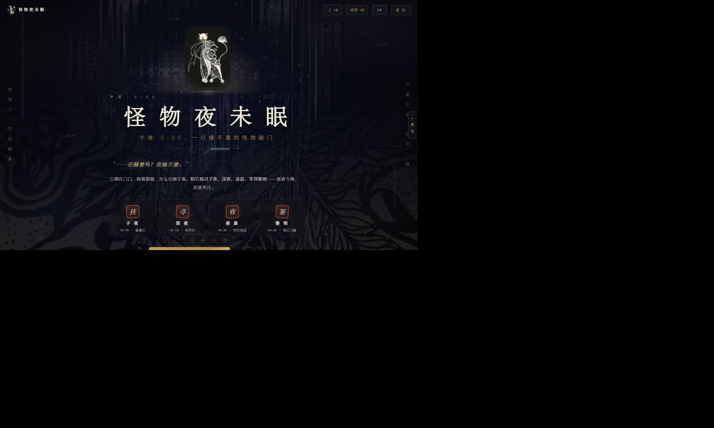

01
开门与 Hub｜世界先有自己的事
R2 · screen-lane / Hub / window states生命感切入窗口有不同相位的亮灭、停顿和局部体征；某些变化与玩家无关。近窗时只触发一次注意，不让全部怪物同时转头。
拟人化切入保留房间身份与生活痕迹，少用全知旁白替它们说话。爬山虎、晾衣绳、灯与楼梯分担非人生命感。
屏幕上的“生命感”不是更逼真的脸，也不只是会动。它可能来自一次自主转向、一段不完全重复的呼吸、对环境的觉察，以及跨越两次相遇仍保留的一点记忆。本研究区分生命感与拟人化，连接新媒体艺术、认知科学、交互设计、声音与游戏研究，并把这些证据带回《怪物夜未眠》的下一夜。
“它似乎有自己的能量、状态与行动缘由；它能开始、停止、趋近、回避、休息，也能对环境作出不完全机械的反应。”
核心对象是“活”。一只水母、一株爬山虎、一团抽象粒子，甚至一扇窗，都可能具有生命感，而不需要人脸、人格或人类语言。
典型证据：自驱运动、变速变向、目标导向、时空应变[03][05][06]“我不只把它当作某物，还把它当作具有人类特征、意图、情感、人格或社会身份的‘谁’。”
核心对象是“人”。人形外观是设计者提供的人类相似性线索；拟人化是观看者实际发生的心理归因。二者会相互作用，但不是同一个变量。[10][12]
典型线索：人形、第一人称、社会角色、人格化叙事[10][13]观众并不直接读取“生命”或“心智”，而是从形态、运动、声音、语境和过往经验推断。设计者能控制线索，不能完全控制归因。
生命感或拟人化不是越高越好。外观、动作、语言和真实能力不一致，可能带来失望、怪异感、过度信任或情感压力。[23][26]
“它活着吗？”——本研究的核心。是观看者的感知，不是系统真的具有生命。
“它像人、有人的心智或社会属性吗？”——可归给动物、神、机器或几何形。
设计者做出的脸、姿态、语言或行为线索；它是设计属性，不等于观众已经发生拟人化。[12]
行走、摆尾、关节运动等生命体运动模式。它是生命感的重要线索之一，不等于全部生命感。[07]
对行动能力与感受能力的归因。它可连接生命感与拟人化，但三者并不互相包含。
“我与另一个社会主体同在”的体验，是可能产生的交互结果，不应拿来替代生命感评分。
没有脸、没有名字、没有第一人称，也可以因为自主启动、柔性形变和环境响应而显得“活着”。
这是《怪物夜未眠》最值得保留的自由：爬山虎、窗灯、呼吸的墙、金叶与云海，都能分担生命感，不必把所有表达都塞进怪物的台词。
设计示例，不是实验条件或测量得分下面不是现成心理学模型，也不是新的生命指数量表，而是本研究从动态生命性、社会认知、具身交互与游戏 NPC 文献中综合出的设计审阅透镜。每一项都必须落到状态与事件，而不是只落在贴图。
全部窗口同频呼吸、每个粒子都抢注意，会像一台统一驱动的机器。让角色有各自节律，也允许安静、停顿和不应答。
无意义抖动只是噪声。变化应与目标、身体状态、环境或历史相关，让玩家能够逐渐读懂，而不是每次重新猜测。
“我永远陪你”首先是语言层面的拟人化。若没有连续状态和恰当行动，它甚至会削弱可信度，并造成不必要的情感承诺。
这个标本台把几个文献中的线索变成可修改参数。它不是用户实验，也不会计算“生命分数”；它的用途是让设计者亲眼看见：相同形体、相同颜色，仅改变运动、状态与响应，就可能产生不同解读。
减少动效模式下，标本只保留静态帧与文字状态；点击仍可查看事件，不做连续位移。参数范围是原型设置，不是文献推荐阈值，也不是玩家生理指标。
清晰、可用，但几乎不提供角色状态。它可作为控制条件。
每项证据只承担它能承担的部分。几何动画实验能支持运动线索，却不能直接证明某只怪物会被喜欢；机器人量表能帮助区分构念，却不能替代游戏玩家的长期访谈；交互艺术理论能打开审美问题，却不等于生理机制证据。
Heider–Simmel 的几何动画说明，观察者会赋予简单图形社会行为叙事；后续研究把自驱启动、速度/方向变化、追逐和时空关系拆解为可操纵变量。[01][02][03][04]
Parovel 与黄梅等的综述进一步把线索归为生物运动模式和表现意图的运动，并指出多种假说和交互机制仍在研究。[05][06]
“某种轨迹在几何图形上提高生命性评分”不等于“同一参数在复杂插画上必然有效”，更不等于改善睡眠、建立长期依恋。
Johansson 的点光研究显示，少量关节点的运动组合可以形成清晰的行走、跑动、舞蹈印象。[07] Pollick 等发现，手臂运动的运动学变化可用于情绪辨别。[08]
这给屏幕设计的启示不是“必须模拟真人骨架”，而是局部运动、整体位移、节奏与重量感应保持一致。
点光人类步态研究不能直接规定非人怪物的“正确呼吸秒数”。任务书中的 3 秒 / 6 秒是美术状态参数，需要可用性与舒适度测试，不是生理处方。
CASA 经典研究表明，人们会向计算机套用社会规则。[13] Godspeed 系列把拟人化、生命感、喜爱、感知智能和感知安全分开测量，并建议检查重叠维度的相关性。[14]
Hoffman 与 Ju 主张从设计早期就研究表达性运动，而不是最后给功能机器人加动作；其方法包含动画草图、视频原型与 Wizard-of-Oz。[15]
机器人量表移植到中文游戏需要翻译回译与信度检查；不能把研究者自己的 0–3 启发式标注包装成 Godspeed 结果。
Kwastek 从艺术史与美学分析互动作品中的参与、游戏和过程性体验。[16] Dourish 把具身交互放在具体实践与社会情境中理解。[17] Loke 与 Robertson 提供从身体经验出发的运动设计方法。[18]
Höök 的 affective loop 强调：意义由用户与系统共同建构，系统不应垄断对情绪的解释。[19]
这些文献主要提供美学与设计方法，不是“生命感脑区”或特定动效有效性的实验证据。
Nielsen 等用空间化的合成蚊子声研究单一声源的运动，发现速度变化等声学线索会影响生命感判断。[21]
Collins 等 2025 年两项几何动画研究（n=149 与 n=250）发现，声音对拟人化、生命感的总体贡献有限；部分声音类型影响拟人化、力度或活动感，第二项并未显著提升拟人化或生命感。[22]
不能把少量研究的零结果写成“声音无用”；也不能把音乐情绪当作角色自身情绪。梦境原声与角色体征声需要分开归因。
Warpefelt 与 Verhagen 通过玩家问卷与 NPC 录像分析提出 NPC 可信性模型，强调行为复杂度与处理变化社会情境的能力。[25] 这与生命感不同：可信性还涉及角色设定、世界规则和玩家期待。
更复杂不必然更可信。大量随机行为可能破坏角色一致性；有限但可解释的状态机，可能比不可控生成更适合这个零依赖小作品。
Kätsyri 等的综述发现，对“只要更接近真人就必然跌入不気味谷”的简单说法支持并不一致，但感知特征错配获得较好支持。[23] Mori 的原始假说仍是重要历史参照，而非普遍定律。[24]
Turkle 对数字陪伴“真实性”的批判提醒设计者：模拟关系能唤起真实感受，也因此需要讨论承诺、替代与脆弱性。[26]
“玩家觉得它活着”不是系统具有意识、感受或道德主体地位的证据，也不能用来论证更强留存机制天然合理。
研究页在同源、隔离的沙箱中读取 index.html 的公开剧本常量与纯函数输出；存储被替换为内存版，不接触玩家存档，不上传数据。页面记录的是“当前构建可证实什么”，不是从生命感反推代码质量。
当前访客：灼热的影子 / 絮语者 / 饱胀的石头 / 冰凉的手 / 刺眼的光 / 隐形的重量
点击代码行号可核对实现。右侧“下一步”属于 v4.1 设计假设，不会因探针连接而自动变成已实现功能。
当前光点有独立轨道、速度与浮动；角色主体主要依赖插画和环境层呈现。
下一步把“环境在动”与“角色在行动”分开：角色先察觉目标，再转向、靠近或回避；不为所有层统一加漂移。
当前捕捉有即时音效、触感与固定 520ms 锁定过场，这是清楚的操作反馈，但不是角色自己的响应。
下一步分离“界面已收到”与“怪物后来如何回应”：前者保持即时，后者依状态做小幅趋近、迟疑或回看，不拖慢连续操作。
当前台词依章节、题目、权重与顺序变化，已经提供非重复叙事反馈。
下一步让回应不只被听见，也被看见：台词对应一个局部体征或注意动作；同一状态内保持动作与措辞一致。
当前起始节奏与波形取自当前怪物，玩家跟拍 8 下后进入合眼叙事；错过不惩罚。
下一步把心跳从“答题仪表”转为共同注意：怪物也回应玩家的停与等。不声称读取玩家心率，不要求生理同步。
当前夜数、访客次数与哄睡次数连续改变辉光、主色、黑眼圈和粒子，是现有构建最明确的跨夜状态痕迹。
下一步保留连续参数，再补一条可叙述记忆：“上次那盏灯，我留着。”避免用黑眼圈加深或责备台词迫使玩家回来。
当前第 N 夜、名字、图鉴次数与轮换台词形成返回仪式；其中“我等你好久了”等句需要关系伦理复审。
下一步召回具体经历而非缺席时长：不计算“你离开了几天”，不表现被抛弃，不用失眠恶化作为回访惩罚。
当前日记把访客、行动卡与寓言收束为一夜结果，并可本地保存。
下一步日记记录关系事件，不只记录分类结果：它注意到了什么、做了什么、玩家改变了什么，以及哪些事仍可选择不做。
当前访客随出现解锁三层图鉴，未出现保持剪影，收藏已经具备记忆结构。
下一步收藏不是终止状态：已收集角色仍有低强度休息、做梦与成对关系，不用持续奖励打扰玩家。
当前WebAudio 合成操作音、心跳、日出等，已有零依赖多模态基础。
下一步R8 以“可见动作 ↔ 可听体征”的一致性验收，不以音效数量验收；所有听觉线索有视觉等价项。
以下样本由当前 monsterLook() 对同一组虚拟夜数实际计算。辉光、眼袋与粒子是视觉变量，不是健康分，也不是生命感评分。
探针只执行公开游戏文件；若通过 file:// 打开，静态研究仍可阅读，但浏览器可能阻止同源读取。请用本地 HTTP 服务或 GitHub Pages 查看实时结果。
原则不是把角色做得更像真人，而是让“它为什么这样做”逐渐被看见。优先修改已有函数和状态，不把实时 3D、摄像头、麦克风、生成式 AI 或更多视频当作生命感的前置条件。
不改变原 R0–R12 依赖关系，而在其验收项中增加一条“状态—事件—感知”检查。先做有限、可读、可中断的行为，再扩大素材。
R1 / R3 / R7 新增最小 presence 状态：idle / notice / approach / avoid / settle / asleep；事件带目标对象与时间戳；捕捉、选择、跳过、离开都能安全打断。同步完成 R6 非内疚召回与红旗边界。先用一只旁妮儿拉灯验证，不铺 13 只。
R2 / R5 / R8 / R9 增加一件局部体征、一个对应声源、一条具体记忆和一种睡着后的低强度状态。Hub 采用独立相位，不要求实时 3D。对明娜戈礼拜与咸豆腐片儿翠翠复用并调整，而不是原样复制。
R10 / R11 / R12 扩展成对角色、终章 nothing 与非强制回访；三维转台只在确实帮助理解形态或关系时使用。先通过生命感与伦理复测，再决定是否需要更多媒体。
S1–S7 是可追溯的已实现历史；v4 是尚未进主线的四幕与怪物里方案；v4.1 是本次生命感增补后的下一阶段目标。三者不能混写为都已上线。

生命感开始从氛围层进入关系层：玩家为怪物命名，跨夜保存名字、访客与进化；光点、心跳、音效和外观连续变化提供了“它在经历时间”的基础。
长建档、四诊题库、点云与报告；运动主要服务诊断交互。
fecda26 ↗删除长报告；静态怪物插画开始替代医学侧写。
60ba72e ↗大命中区、近指针减速、跳章；玩家控制感改善。
9cccbde ↗子夜到黎明、怪物台词、心跳合眼与日出。
3aed40b ↗访客现形、行动卡与寓言，夜晚获得结果与记忆。
2baf27f ↗存档、返回小关；颜色、辉光与黑眼圈随夜数变化。
d55da2a ↗访客解锁、夜晚徽章、3/7/15 夜成长。
75c37c4 ↗减少动效、键盘、lite 与文档；生命感不只靠运动。
7c68708 ↗0 = 未见；1 = 零散或主要装饰；2 = 与状态相连；3 = 与状态、事件和历史共同相连。由研究者依据代码/任务书进行设计审阅，不是玩家评分、量表结果或总分排名。v4.1 是目标标注，必须经实现后重评。
| 透镜 | S1 | S7 | v4.1 | 变化依据 |
|---|
| 比较维度 | S7 · 当前构建 | v4 · 原任务书方案 | v4.1 · 本次生命感增补 |
|---|---|---|---|
| 谁在动 | 镜头、光点、颗粒与过场较活跃；怪物多由插画和台词呈现。 | 房间循环、2.5D、局部体征、梦境视频。 | 先让角色有目标与独立状态，环境动态退到支持位置；视频仍不是必要条件。 |
| 为什么动 | 主要服务操作反馈、章节氛围与奖励。 | 依据角色失眠循环与醒着/睡着状态。 | 每个动作附目标、触发事件与可打断状态；无法解释动因的装饰运动降级。 |
| 如何回应 | 捕捉反馈 + 台词 + 选项结果。 | 选错重演、选对环境变化、专属小游戏。 | 增加共同注意、面向对象的动作、状态化迟疑/回避；即时 UI 与角色响应解耦。 |
| 身体与声音 | 心跳、WebAudio 与台词提供局部身体感。 | 14 种体征声、醒睡视觉参数、分层音乐。 | 以动作—声音—状态一致性验收；静音和减少动效有等价线索，不追求音效数量。 |
| 记得什么 | 名字、夜数、访客次数、徽章、进化与视觉累计参数。 | 收集、手札、三柱、成对角色、梦与守夜人。 | 再补最近一次具体物件/选择/睡着状态；不记缺席欠账，不假装知道现实情绪。 |
| 世界是否继续 | 返回时进入第 N 夜，图鉴逐渐解锁。 | Hub 窗态、收集标志物、成对角色、夜班车。 | 已收集角色进入低强度日常；世界事件可有独立节律，但不制造强制回访。 |
| 关系伦理 | 没做好不惩罚；免责声明；部分召回语可能带来等待感。 | 红旗暂停奖励、镜子可跳过、终章反游戏。 | 明确虚构与能力边界；禁内疚召回、禁读心、可离开/清除；红旗时退出拟人表演。 |
建议用 2×2 因子原型把生命感线索与拟人化线索分开，再用量表、访谈和交互行为互相校验。以下是形成性研究方案，不是已经完成的实验，也不用于检验睡眠改善。
同一怪物、同一构图、同一音频。角色只做固定路径，文案为“物件已记录”。用作基线，不称它“无生命”。
仅加入自主启停、目标趋向、共同注意与跨幕状态；保留中性文案，隔离运动和状态的作用。
运动与 A 相同，仅把文案换成第一人称、角色习惯与有限的社会回应，不使用夸张承诺。
组合 B 与 C，观察二者是互补、冗余还是产生不一致；不只寻找“D 最高”的预设答案。
参考 Godspeed 的拟人化与生命感分量表，保留各自题项与相关分析；增加“它注意到我”“它有自己要忙的事”“它记得上次发生的事”。中文版本需翻译回译与信度检查。[14]
请参与者回放一段并说“你觉得它此刻在做什么、为什么”。记录使用的动词、主体归因和不确定表述，不把研究者术语塞给参与者。
加入“我觉得必须回来”“离开让我内疚”“它比我更懂自己”“我能随时停止”的反向/正向项，以及眩晕、打扰、被监视感和实际跳过行为。
“生命感”是体验设计，不声称怪物有意识、情绪或医学能力。
不因几天未归而恶化外观、失去关系或收到责备。
不申请身体传感器，不从点击推断玩家情绪、失眠或诊断。
怪物可以休息，玩家可以跳过、离开、不想说和清除记忆。
陪伴叙事不替代亲友、专业服务与紧急支持。
不以停留时长、连续签到或依赖强度证明生命感设计成功。
以下 26 项来源于 2026-11-11 按出版方页面、PubMed、Crossref、作者机构库或大学书目核验元数据。标注“核验”指书目信息与出处，不表示本研究重新执行了原实验，也不表示所有全文均开放获取。
本页用途：支持单一物体的速度、方向及主体轴向变化可影响生命感判断。
边界：实验中的简单粒子运动不能直接变成复杂插画的固定参数。
本页用途：支持朝向、追逐与空间关系能系统塑造生命性和意图感知。
边界：追逐只是目标导向的一种，不应把所有怪物互动都设计成追逐玩家。
本页用途：梳理运动学与时空模式对生命感、意图性的贡献及生命探测假说。
边界：作者也讨论未决问题，不能把生命探测器说成已完全证实的单一机制。
本页用途：支持表面轮廓被剥离后，少量关节点的运动仍能传达生物运动。
边界：不能推出所有生命感都必须模拟人类步态。
本页用途：支持运动学特征可参与情绪信息表达，提示动作设计不只负责位移。
边界：具体情绪识别依赖语境，不能让系统据动作反推玩家真实情绪。
本页用途：把拟人化理解为受人类知识、效能动机与社会联结动机共同影响的归因过程。
边界：不是“加人形就会被喜欢”的配方，也提醒注意文化与个体差异。
本页用途：区分能动（计划、行动、自控）与体验（感受、情绪）两类心智归因。
边界：后续研究对维度结构有扩展与修正，本页只借用基本区分。
本页用途：区分设计者提供的人类相似性与观看者发生的拟人化归因。
边界：是较新的概念框架，仍需与既有实证研究共同使用。
本页用途：支持人们会向计算机套用社会规则，为语言与关系设计提供基础。
边界：早期计算机情境不等同于所有当代 AI 或游戏；不把社会反应当作真实互惠。
本页用途：区分拟人化与生命感的测量；强调重叠题项、相关分析、信度和相对比较。
边界：原文明确承认灵敏度、翻译与跨文化限制；不能将本页启发式雷达图冒称 Godspeed。
本页用途：把交互作品当作参与、过程与审美经验，而非只会响应输入的技术外壳。
边界：用于艺术史和美学论证，不作为生命感神经机制或量表证据。
本页用途：把交互意义放回具体实践、身体和社会情境，而非抽象的信息处理。
边界：提供理论视角，不直接规定动画或游戏机制。
本页用途：支持检查外观、动作与能力之间的感知错配，而非把不気味谷当成普遍曲线。
边界：作者指出朴素假说和运动调节的证据并不一致，具体条件仍需研究。
本页用途：作为讨论人类相似性、运动与亲和反应的历史起点。
边界：不把理论曲线当作已被普遍证实的定律；与 Kätsyri 等综述一起阅读。
本页用途：支持从行为复杂度和变化社会情境考察 NPC 可信性。
边界：可信性、生命感和拟人化不是同一构念，复杂度也不是越高越好。
本页用途：提醒讨论数字陪伴的真实性、关系承诺和脆弱性，而不只讨论参与感。
边界：属于批判性论证，不是“陪伴必然有害”的实验结论。